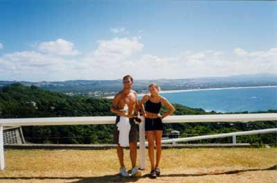
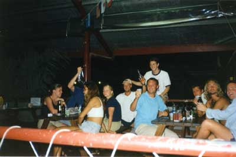
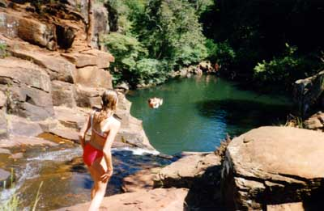
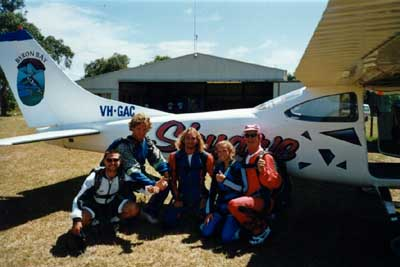
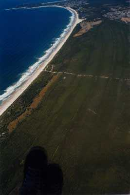
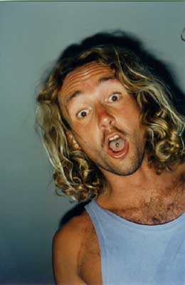
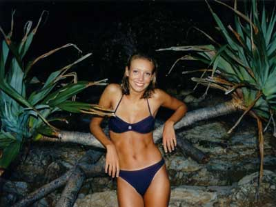

| Brad and Bec at the lighthouse, with the main beach in the background. |  |
|  | Many fine people sitting on the deck at Js, the first time around in Byron. |
| Rock jumping at Dalwood Falls. Bec's in the foreground, with Chiro, a Swiss guy, doing a front flip in the background. The 40-ft leap is just out of sight on the right (honest!). |  |
|  | Bec and Tim before their skydive - nutters. But I may have to give it a go myself, if I can get the bottle up. |
| Taken by Tim during the skydive! A view of Byron Bay main beach, with the lighthouse at the top. |  |
|  | King Nutter himself - Tim. |
| A photo of Bec taken at dusk on the main beach at Byron, by a professional photographer for whom she did a bit of modelling. |  |